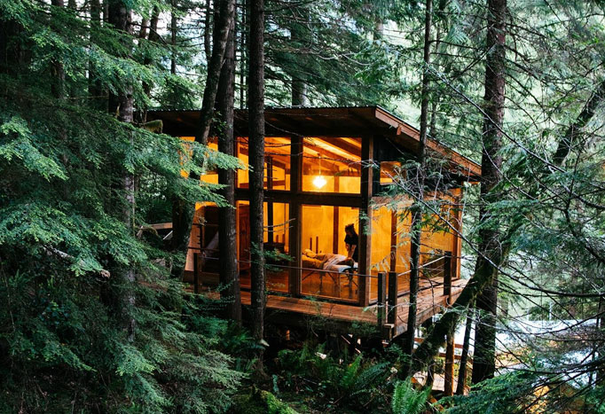
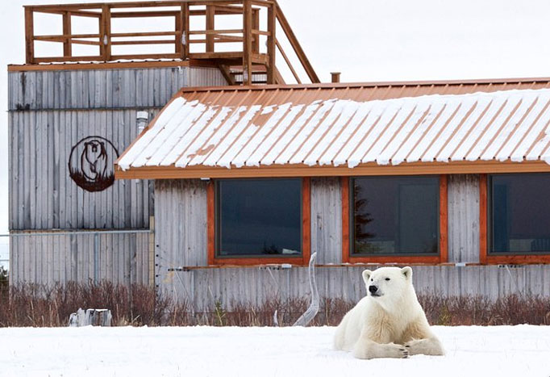

Meilleurs éco-resorts & séjours nature au Canada

Nimmo Bay Wilderness Resort
Localisation : Great Bear Rainforest, Colombie-Britannique
Prix par nuit : 2 000 $+
Lodge flottant isolé dans une nature intacte
Kayak, randonnées en hélicoptère & observation des ours
Éco-resort de luxe entièrement durable
Niché dans la Great Bear Rainforest, le Nimmo Bay Wilderness Resort est l’un des éco-retraites les plus exclusives du Canada, offrant une expérience de luxe isolée axée sur la durabilité, l’aventure et l’exploration de la nature sauvage de classe mondiale.
Voir l'hôtel
Clayoquot Wilderness Lodge
Localisation : Île de Vancouver, Colombie-Britannique
Prix par nuit : 2 100 $+
Resort de luxe sous tentes style safari
Safaris animaliers, balades à cheval & randonnées en hélicoptère
Éco-resort neutre en carbone
Situé dans une biosphère protégée, le Clayoquot Wilderness Lodge offre à ses hôtes une expérience de glamping ultra-luxueuse entourée de forêts, rivières et faune intactes.
Voir l'hôtelTweedsmuir Park Lodge
Localisation : Bella Coola, Colombie-Britannique
Prix par nuit : 800 $+
Site privilégié pour observer les grizzlis
Environnement montagnard isolé avec héliski & randonnées
Lodge certifié éco-responsable
Réputé pour ses légendaires excursions d’observation des ours, le Tweedsmuir Park Lodge est une retraite de choix offrant randonnées guidées, aventures en rivière et expériences d’héliski.
Voir l'hôtelAlgonquin Eco-Lodge
Localisation : Parc provincial Algonquin, Ontario
Prix par nuit : 180 $+
Lodge hors réseau alimenté par énergie renouvelable
Canoë, observation de la faune & sentiers nature
Séjour rustique, immergé dans la nature sauvage
Caché au cœur du parc provincial Algonquin, cet éco-lodge offre une expérience totalement hors réseau, permettant aux visiteurs de se reconnecter à la nature tout en minimisant leur empreinte carbone.
Voir l'hôtel

Churchill Wild – Nanuk Polar Bear Lodge
Localisation : Manitoba
Prix par nuit : 4 000 $+
Observation exclusive des ours polaires & de la faune arctique
Éco-lodge de luxe isolé
Accessible uniquement par avion, expérience tout compris
Pour une aventure arctique unique, le Nanuk Polar Bear Lodge offre un accès inégalé aux ours polaires, loups et aurores boréales, tout en maintenant un fort engagement pour la conservation.
Voir l'hôtelWest Coast Wilderness Lodge
Localisation : Sunshine Coast, Colombie-Britannique
Prix par nuit : 350 $+
Éco-lodge en bord de mer entouré de forêts
Kayak, randonnée & excursions fauniques
Destination touristique durable primée
Perché sur la côte sauvage du Sunshine Coast, le West Coast Wilderness Lodge allie aventure en pleine nature et luxe en bord de mer, offrant un accès à des paysages intacts et des expériences de voyage durables.
Voir l'hôtelCabot Shores Wilderness Resort
Localisation : Île du Cap-Breton, Nouvelle-Écosse
Prix par nuit : 250 $+
Yourtes & éco-lodges hors réseau
Kayak, randonnée & retraites de yoga
Retraite forestière près du Cabot Trail
Véritable joyau caché de l’île du Cap-Breton, le Cabot Shores Wilderness Resort propose un mélange d’hébergements hors réseau, d’excursions nature et de retraites méditatives dans un cadre côtier spectaculaire.
Voir l'hôtelEmerald Lake Lodge
Localisation : Parc national Yoho, Colombie-Britannique
Prix par nuit : 350 $+
Retraite au bord d’un lac dans les Rocheuses
Pas de TV ni Wi-Fi pour une vraie déconnexion
Luxe durable au charme historique
Véritable havre de paix en montagne, l’Emerald Lake Lodge est reconnu pour ses pratiques éco-responsables, ses cabanes isolées et ses paysages incroyables, idéal pour les amoureux de la nature.
Voir l'hôtel